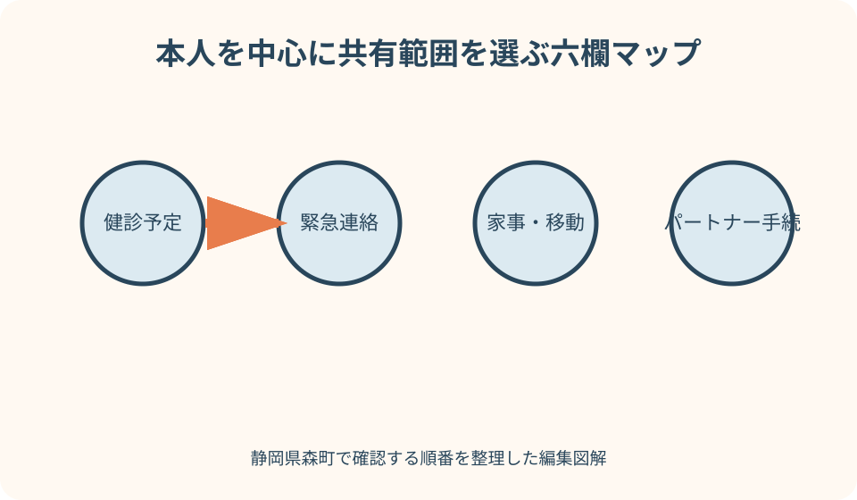
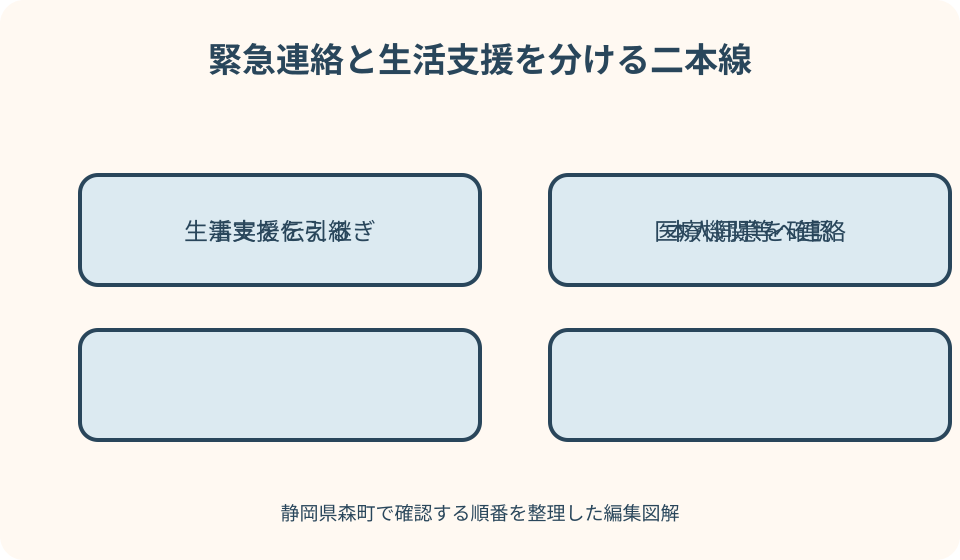

妊娠・子育て手続｜最終確認 2026-08-10
静岡県森町で妊娠情報を家族共有する｜健診予定・緊急連絡・パートナーの役割
妊娠中の情報共有は、母子健康手帳や健診結果を家族全員へ丸ごと見せることではありません。本人が共有したい範囲を決め、健診の日時、送迎、緊急連絡、家事、勤務先の手続など、家族が行動するために必要な情報だけを分けて持つことが出発点です。静岡県森町の公式情報を軸に、医療判断を家族へ移さず、本人の安心と生活を支える共有表を作ります。

編集イラスト家族共有を六つの欄に分ける
最初に、妊婦健診の予定、緊急時の連絡、家事と移動、父親・パートナーの手続、母子保健情報、本人同意とプライバシーの六欄を作ります。一枚に置いても、目的が違う情報は混ぜません。
予定表には、家族が行動するための日時、場所、担当、連絡先を書きます。健診結果や詳しい健康情報は別に保管し、共有する相手と範囲を本人が選べるようにします。
家族内の呼び方や関係性は家庭ごとに異なります。この記事でいう父親・パートナーは、妊娠した本人を支える人を指し、婚姻や同居の有無だけで役割を決めるものではありません。
共有表は医療者の判断を置き換えるものではありません。体調変化について受診すべきか、薬をどうするか、検査結果をどう評価するかは、家族だけで結論を出さず医療機関等へ相談します。
森町公式情報の入口をそろえる
森町で妊娠の届出や母子健康手帳について確認する入口は、町公式の「妊娠したら（母子健康手帳の交付）」です。対象、持参物、相談先などを実行時点のページで確認します。
妊婦健診に関する町の案内は、受診票や公費負担の扱いを知る入口になります。実際の受診日時、検査内容、個別の体調については、予約する医療機関の説明も確認します。
「もりっこ」は妊娠・出産から子育てまでの情報を探す総合入口です。父親・パートナーは、本人から頼まれた範囲で関連ページのURL、更新日、問い合わせ先を整理できます。
この記事の情報確認日は2026年8月10日です。手続、様式、相談先、健診の案内は変わり得るため、実際に利用する日に森町公式ページと個別通知を再確認してください。
妊婦健診の予定は日時と支援を分ける
健診予定欄には、予約日時、医療機関、出発予定、交通手段、付き添いの有無を書きます。診療内容を家族が予測して書くのではなく、本人が共有を希望する予定情報に絞ります。
仕事や上の子の予定と重なる日は、送迎、付き添い、留守番、食事の担当を先に決めます。付き添いが必要かどうかは本人の希望と医療機関の案内を確認し、家族の都合だけで決めません。
受診票、母子健康手帳、医療機関から指定された持参物は一つの袋にまとめられます。ただし本人確認書類や健康情報を含むものは、持ち出す人と返却場所を明確にします。
健診後に共有するのは、次回予定、生活上の支援、本人が伝えたい内容です。検査値を家族が検索して評価したり、本人の同意なく親族へ広げたりしません。
受診票と母子健康手帳を混同しない
母子健康手帳は妊娠・出産から子どもの健康をつなぐ記録で、妊婦健診の受診票とは役割が異なります。家族共有表には、どちらを誰が保管しているかだけを書き、内容を一括で複製しません。
転入、県外受診、里帰りなどがある場合は、受診票の扱いや費用の手続について森町の案内を確認します。使える、後で精算されるといった結果を家族の経験だけで決めません。
手帳や受診票を紛失した可能性があるときは、最後に使った場所と日付を確認し、森町や医療機関へ相談します。医療記録をどこまで照会・再記載できるかは、この記事から断定できません。
写真で控えを作る場合も、全ページを家族チャットへ送る必要はありません。緊急時に必要な連絡先と予定は共有表へ置き、健康情報の画像は本人が管理できる保存先を選びます。
緊急連絡は状況・場所・連絡順で作る
緊急連絡欄には、本人の現在地、かかりつけまたは受診先として案内された医療機関、家族の連絡順、移動手段を書きます。症状別の自己診断表を作るのではなく、相談先へ早く情報を渡すための欄にします。
医療機関から緊急時の連絡方法や受診の目安を説明されている場合は、その案内を本人と確認して保管します。家族が別の基準へ書き換えたり、インターネット情報だけで上書きしたりしません。
第一連絡先が電話に出られないときの第二、第三の順番を決めます。勤務中、夜間、町外にいる場合を分け、誰が車を出せるか、上の子を誰が見るかも確認します。
生命や身体に差し迫った危険があると考えられる場合は、通常の家族連絡表にこだわらず119番など適切な緊急連絡を優先します。判断に迷う状況は、医療機関や公的な相談窓口の案内を利用してください。
医療機関へ伝える事実を短く整理する
連絡時に役立つのは、本人の氏名、妊娠週数として医療機関から伝えられた情報、現在地、起きていること、始まった時刻、連絡可能な電話番号です。家族の推測と本人が訴える事実を分けます。
父親・パートナーが代理で電話する場合も、本人が話せる状態なら本人の説明を優先します。本人が話しにくいときは、そばで確認した事実と分からないことを正直に伝えます。
服薬名やアレルギーなど医療機関へ伝える必要がある情報は、本人が保管している記録の場所を共有できます。家族が服薬を中止・変更する指示はしません。
相談後は、連絡時刻、相手先、案内された次の行動を記録します。聞き取りに自信がなければ復唱し、家族間の伝言で内容が変わらないようにします。
家事は固定担当ではなく代替順を決める
家事欄には、食事、買い物、洗濯、掃除、ごみ、上の子や家族の世話を並べます。「本人ができないときだけ手伝う」ではなく、あらかじめ主担当と代替担当を決めます。
体調は日によって変わるため、毎日同じ量をこなす計画にしません。最低限行うこと、翌日へ延ばせること、外部サービスや家族へ頼めることを分けます。
本人へ毎回説明を求めずに動けるよう、買い物の定番、子どもの迎え、家の鍵、支払い方法など生活情報を整理します。ただし本人の私物や医療資料を無断で探すことは避けます。
遠方の親族へ支援を頼む場合は、来訪日、宿泊、交通、本人が望む支援内容を確認します。善意でも、本人の休息やプライバシーを損なう支援にならないよう調整します。
森町での移動を三つの案で持つ
移動欄は、通常の健診、急な相談、悪天候や車が使えない日の三場面で作ります。自宅から医療機関までの所要時間は、曜日や時間帯も考えて余裕を持たせます。
車を使う家庭は、運転者、鍵、燃料、チャイルドシートが必要な上の子の同乗方法を確認します。妊娠した本人が常に運転できる前提にはしません。
森町の北部・山間部と町なかでは、医療機関や役場までの移動条件が家庭ごとに違います。これは医療上の扱いの差ではなく、連絡と移動に必要な時間として予定へ反映します。
タクシー、公共交通、家族送迎などの代替手段は、連絡先と利用条件を実行前に確認します。運行や利用可否をこの記事が保証するものではなく、必要時に最新情報へ戻ります。
父親・パートナーの行政手続を洗い出す
父親・パートナーの手続欄には、森町への届出だけでなく、勤務先へ確認する休暇・休業、健康保険、出生後の扶養等を分けます。担当機関が違う手続を一つの提出で済むと思わないことが大切です。
出生後の届出を準備するときは、名称、提出先、期限、必要書類、誰が提出するかを森町公式案内で確認します。妊娠中に作った下書きは、出生後の事実を確認してから完成させます。
勤務先の育児休業や休暇は、就業規則、社内窓口、厚生労働省の制度案内を確認します。家族の希望だけで取得日や給付の条件を確定せず、勤務先と関係機関へ照会します。
婚姻、同居、就労形態など家庭の状況によって、確認先や必要書類が異なる可能性があります。該当しない関係を前提にせず、本人とパートナーそれぞれの立場から担当へ質問します。
勤務先との共有は必要事項に絞る
勤務先へ伝える範囲は、本人とパートナーでそれぞれ検討します。妊娠に関する詳しい健康情報を同僚全員へ共有するのではなく、就業上の配慮や手続に必要な相手と内容を確認します。
妊娠した本人が働いている場合、母性健康管理に関する厚生労働省の案内があります。具体的な就業上の対応は、医師等の指導、勤務先の窓口、本人の状況を踏まえて確認します。
パートナーは、健診同行や急な支援に備え、自分の休暇申請の経路、代理連絡先、業務の引継ぎを準備できます。妊娠した本人へ勤務先調整の全責任を負わせないようにします。
職場への連絡内容と家族共有表は別に管理します。家族が知っている健康情報を、本人の同意なく勤務先へ伝えることは避けます。
母子保健情報は三つの層で管理する
母子保健情報は、家族全員が知る行動情報、支援者だけが知る限定情報、本人と医療者が扱う健康情報の三層に分けます。全てを同じチャットへ置かないことが基本です。
行動情報には健診日時、送迎、緊急連絡順、家事担当が含まれます。限定情報には本人が指定した連絡先や必要な配慮、健康情報には診療記録や検査結果などが考えられます。
どの情報がどの層かは、本人の希望と状況によって変わります。家族が「心配だから必要」と一方的に決めず、共有目的と相手を本人へ確認します。
こども家庭庁の母子保健情報は制度や支援を知る入口です。個別の体調や医療上の判断は公式制度ページだけで決めず、医療機関や森町の相談先につなぎます。

本人同意を一度きりにしない
本人同意は、妊娠が分かった時点で一度取れば終わりではありません。共有する情報、相手、目的、期間が変わるたびに、本人が望む範囲を確認します。
家族へ伝えてよい内容でも、親族、勤務先、友人、SNSへ広げてよいとは限りません。「家族内」「緊急連絡先」「外部」の境界を具体的に決めます。
本人がその場で答えたくない場合は、急がせず保留欄を作ります。ただし緊急時に生命・身体を守るため必要な連絡は、状況に応じて専門機関の指示を優先します。
共有を取り消したいと本人が伝えたら、保存先と送付先を確認し、不要な複製を削除する方法を話し合います。すでに医療機関や行政へ提出した記録の扱いは各機関へ確認します。
プライバシーを守る保存方法
家族共有表には診断名や検査値を詰め込まず、予定と行動を中心にします。健康情報が必要な場合は、本人が管理する別の封筒や保護されたデータへ置きます。
スマートフォンの共有メモを使うなら、誰が閲覧・編集できるかを確認します。機種変更、紛失、家族関係の変化があったときにアクセスを見直せる方法を選びます。
紙の表は、来客や子どもの目に触れる場所へ貼らず、緊急連絡だけを抜き出したカードと詳しい情報を分けます。持ち出す資料には紛失時の連絡先を記す方法も検討します。
写真や健診結果を親族へ送る前に、本人の同意と送る目的を確認します。善意の相談でも、送信後は回収しにくいことを踏まえて最小限にします。
情報共有の良い点
六欄に分ける良い点は、父親・パートナーが「何か手伝う」状態から、日時、役割、連絡先を持って具体的に動ける状態へ変わることです。本人が毎回指示する負担を減らせます。
健診予定と健康情報を分ければ、送迎や家事に必要な情報は共有しつつ、本人の診療上のプライバシーを守りやすくなります。支援と監視を混同しない仕組みになります。
緊急連絡順と移動の代替案があれば、第一連絡先が動けない場面でも次の人へ引き継げます。森町内外の移動時間も含めた準備ができます。
行政・勤務先の手続を別々に管理すると、「役場へ届けたから会社も完了」といった思い込みを防げます。問い合わせ先と確認日を残し、未確認事項を見える化できます。
公的案内へ注文したい点
注文したい点は、母子保健、健診、出生後の届出、勤務先の制度が別々に案内され、初めての家庭には全体の時間軸が見えにくいことです。家族側で担当と日付をつなぐ作業が必要になります。
妊娠した本人向けの説明はあっても、パートナーが何を確認し、どこまで代理できるかが一ページで分からないことがあります。代理の可否は手続ごとに担当へ確認します。
公式ページに一般的な相談先が掲載されていても、夜間や個別の体調にどこへ連絡するかは医療機関からの案内が重要です。家族共有表に一律の受診基準を書き込まないでください。
情報が分散しているからといって、家族が独自に可否を断定するのは避けます。読んだページ、残った疑問、本人の状況を示して、森町、医療機関、勤務先など該当先へ質問します。
よくある共有の行き違い
よくある行き違いは、予定を伝えたことを付き添いの依頼と受け取ることです。健診日時を共有するときに、送迎が必要か、待ち時間をどうするか、本人だけで行く予定かを明記します。
家族が診察内容を詳しく知りたい一方、本人は結果をまだ話したくないことがあります。「心配だから聞く」を優先せず、必要な生活支援を尋ねる形へ変えます。
行政手続を任された人が、医療上の説明まで代わりに決めてしまう混同も避けます。書類の提出担当、医療機関への質問、本人の意思決定は別の役割です。
口頭で変更した予定が共有表へ反映されないと、古い時間に迎えへ行くことがあります。変更者、変更時刻、最新版の置き場所を一つに決めます。
家族が遠方・別居の場合の共有
父親・パートナーや親族が遠方・別居の場合は、現地で動く人と電話で支える人を分けます。距離がある人を第一送迎者にするなど、実行できない役割を割り当てません。
オンラインで健診予定を共有するなら、日時と必要な支援だけを送り、母子健康手帳の全ページや診療明細を常時共有しない方法を選べます。
来訪して支援する家族には、滞在期間、家事内容、鍵、上の子の送迎、医療機関への同伴希望を本人と確認します。来訪自体を既定の予定にしません。
緊急連絡では、遠方の人が現地の医療機関へ重複して電話しないよう、連絡担当を一人決めます。結果を家族へ戻す担当も定めます。
上の子と同居家族の予定を重ねる
上の子がいる家庭は、保育・学校の送迎、食事、入浴、就寝を健診予定へ重ねます。健診日のみならず、急な受診になった場合の預け先を確認します。
同居家族に介護や通院が必要な人がいる場合も、予定を同じ時間軸で見ます。ただし健康情報は本人ごとに分け、妊娠した本人の資料と混在させません。
子どもへ妊娠について伝える範囲は、年齢、家庭状況、本人の意向を踏まえて決めます。子どもを家族間の伝言役や医療情報の管理者にはしません。
予定が重なったときは、優先順位を家族だけで医療判断せず、医療機関や施設へ日程変更の可否を確認します。変更が可能だと記事から保証することはできません。
出生後の手続は妊娠中に担当だけ仮決めする
出生後の手続は、妊娠中に名称、提出先、想定担当を調べられます。ただし出生日時や子どもの情報など、出生後に確定する事実は空欄にしておきます。
出生届、健康保険加入、子どもの医療費助成、児童手当などは担当や必要書類が異なります。一つの申請で全て完了するとは考えず、森町と加入先へ確認します。
父親・パートナーが提出する予定でも、本人確認、委任、原本の必要性を調べます。出産直後の本人へ不足情報を何度も尋ねなくて済むよう、質問リストを事前に作ります。
予定していた担当が動けない場合の代替担当も決めます。代理提出が認められるかは手続ごとに異なるため、家族内の割当だけで成立を保証しません。
共有を拒まれたときの考え方
本人が健康情報の共有を望まない場合、家族は理由を問い詰めるより、生活上どの支援なら受け入れられるかを尋ねます。健診日時を知らなくても、食事や上の子の送迎を支援できることがあります。
一方で、緊急連絡に必要な最低限の情報については、本人が安心できる相手、保存方法、利用する場面を話し合います。家族全員に配らず、一人だけを連絡担当にする方法もあります。
家族関係に不安や暴力、監視への懸念がある場合、共有を増やすことが安全につながるとは限りません。本人が安心して相談できる医療機関や公的相談先へつなぐことを優先します。
同意が得られないことを、本人が協力的でないと評価しません。妊娠・出産の情報は本人に関わる機微な情報であり、支援は本人の意思を尊重して組み立てます。
予定変更が続く場合の代案・結論
体調や診療の都合で予定変更が続く場合の代案・結論は、固定日程の共有から、「次回確認時刻」と「変更を伝える人」の共有へ切り替えることです。確定前の情報を家族全員へ流し続ける混乱を減らします。
送迎者が見つからないときは、本人が無理に移動する前に、医療機関へ予約変更や受診方法について相談します。どの方法が使えるかは医療機関の案内に従います。
家事が回らない場合は、最低限の生活、延期可能、外部へ頼む項目へ分けます。家を完全に整えることを優先し、本人の休息や受診を後回しにしないよう家族で調整します。
手続資料がそろわない場合は、不足名、取得先、確認期限を書き、森町や勤務先へ相談します。受付や期限延長が可能だとは決めつけず、回答を記録します。
家族共有シートの具体的な書き方
表の先頭には、本人が共有を許可した名前、現在の妊娠週数として医療機関から示された情報、更新日を書きます。詳しい診断や検査値は原則として別管理にします。
各行は、項目、日時、担当、連絡先、本人同意の範囲、次回確認日で構成します。未確認は空欄にせず「未確認」と書き、誰が確認するかを割り当てます。
緊急連絡行だけは紙のカードにも複製できます。ただし外出先で紛失した場合を考え、必要以上の健康情報や個人番号は記載しません。
更新履歴には、変更した人と時刻を残します。古い予定は削除するだけでなく取消済みと分かるようにし、家族が誤って向かわないようにします。
固有図解案1：六欄の共有範囲マップ
一つ目の図解は、中心に妊娠した本人を置き、健診予定、緊急連絡、家事・移動、パートナー手続、母子保健情報、同意・プライバシーの六枚のカードを周囲に配置します。
各カードには「本人のみ」「指定した支援者」「家族共有」の三段階を示す小さな鍵マークを付けます。同じ情報でも相手によって共有範囲が違うことを表します。
健診予定から送迎と家事へ線を結び、健康情報そのものを広げなくても生活支援ができる関係を見せます。診療結果から家族が判断する流れは描きません。
背景には森町の山並みと町なかへ続く道を置き、移動時間を支援計画に含める土地感を加えます。地域による医療上の差を示す表現にはしません。

固有図解案2：緊急連絡と生活支援の二本線
二つ目の図解は、上段に本人から医療機関・119番等へつながる緊急連絡線、下段に送迎、上の子、家事、勤務先連絡へつながる生活支援線を並べます。
緊急連絡線には、現在地、起きていること、開始時刻、折り返し番号という事実カードを置きます。症状から家族が診断へ進む分岐は作りません。
生活支援線には、第一担当が動けない場合の第二担当を置きます。父親・パートナーが不在でも、本人が同意した範囲で引き継げる構造にします。
二本線の間にプライバシーゲートを描き、医療情報を生活支援の全員へ自動で渡さないことを示します。緊急時の情報提供は専門機関の指示に従う注記を添えます。
大石の視点：情報より先に本人の安心を置く
大石の視点では、家族共有の量が多いほど支援がよいとは限りません。本人が監視されていると感じれば、相談や休息が難しくなります。何を知るかより、何を引き受けるかを家族が具体化する方が大切です。
森町では、医療機関や役場までの移動、上の子の送迎、町外勤務など、家庭ごとの動線が支援の現実を左右します。予定表には制度名だけでなく、動ける人と所要時間を書きます。
住まいの広さや親族との距離も出産前後の暮らしへ影響しますが、妊娠を理由に転居や不動産の結論を急ぐ必要はありません。現在の負担、支援者、移動を記録してから選択肢を比べます。
家族共有表は、本人に説明を繰り返させない引継ぎ道具です。同時に、本人の健康情報を囲い込む道具にしないため、同意範囲と見直し日を必ず設けてください。
今日始める三十分の家族確認
最初の十分で、次回健診の日時、場所、移動手段だけを本人の希望に沿って確認します。付き添いの要否と上の子への対応も分けて書きます。
次の十分で、緊急連絡の第一・第二連絡先、医療機関から案内された連絡方法、現在地を伝える方法を確認します。家族独自の受診基準は作りません。
最後の十分で、家事の主担当と代替担当、父親・パートナーが森町・勤務先へ確認する項目を一つずつ決めます。すべての手続をその場で完成させる必要はありません。
共有後は、本人に「この範囲でよいか」「誰まで見られるか」を確認し、次回見直し日を決めます。実行時には森町、医療機関、勤務先の最新案内へ戻ってください。
公式情報・確認先
掲載内容は次の一次情報を基礎に整理しました。営業、料金、催し、交通は変わるため、出発前または手続き前にリンク先で最新情報を確認してください。
- 妊娠したら（母子健康手帳の交付）（静岡県森町、2026-08-10確認）
- 妊産婦の健診案内（静岡県森町、2026-08-10確認）
- 森町子育て応援サイト もりっこ（静岡県森町、2026-08-10確認）
- 母子保健（こども家庭庁、2026-08-10確認）
- 職場における妊娠中・出産後の女性労働者の健康管理（厚生労働省、2026-08-10確認）
- 育児・介護休業法について（厚生労働省、2026-08-10確認）